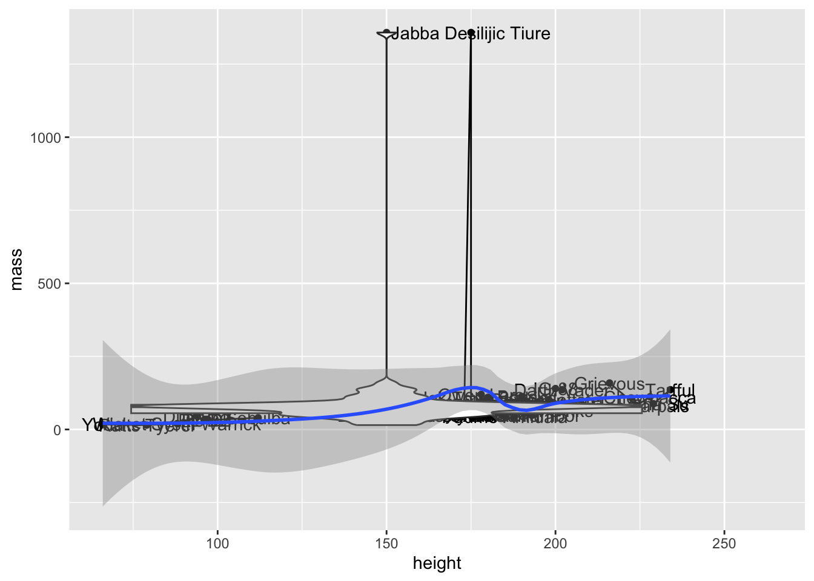

2.3 Plotting your data with ggplot2
In the last chapter, we learned that R is highly versatile when it comes to plotting and visualising data. Visualistation really cannot be understated - as datasets become larger and more difficult to handle, it is imperative you learn how to effectively plot and explore your data. This obviously takes practice, but plotting and summarising data visually is a key skill for guiding further analysis - this is especially true for evolutionary genomics but is easily applicable to any number of scientific fields.
As you may have gathered by now, there are lots of opinions on how to use R - whether you should use base or tidyverse approaches. We want to stress that there is nothing wrong with using base plotting, it is capable of some very impressive plots (use demo(graphics) to have a look). However ggplot2 is extremely flexible and takes quite a different approach to plotting compared to baseR.
2.3.1 The three things you need in a ggplot
You need three basic elements to construct a ggplot:11
- Data: this is your data set, and it has to be contained in a data frame.
- Variables: You need variables to plot on the x and y axes (mapping of variables)
- Geometry: You need some graphics in your plot: points, lines, boxplots, histograms etc.
Let’s now use these three elements step-by-step to build up our plot. In our example, we want to make a scatterplot (plot with points) of height vs. mass in our starwars data set.
2.3.1.1 Data
First, we try supplying our data, starwars. The data is provided as an argument to the ggplot() function.
ggplot(data = starwars)
As you can see, this results in a completely empty plot (because, like I said, we need two more things).
2.3.1.2 Variables
The variables are provided to the mapping argument of ggplot(). For reasons we won’t discuss here, all variables always have to be contained within the function aes(). Let’s try providing variables to our plot:
ggplot(data = starwars, mapping = aes(x = height, y = mass))
Now we’re getting somewhere! We have axes now, but we’re still missing our points. Time to add the geometry.
2.3.1.3 Geometry
The geometry of a ggplot aren’t provided to the ggplot() function as arguments. Instead, a separate function is added to the plot using +. All the functions for adding geometry start with geom_, and the one for points is called geom_point(). We add this to our plot:
ggplot(data = starwars, mapping = aes(x = height, y = mass)) + geom_point()
Wohoo, we now have the plot we set out to make! There’s an obvious outlier in the mass department, which we’ll deal with later.
The philosophy behind adding geometry with a + is that you build up your plot, layer by layer. We could for example add a regression line in addition to points in our plot:
ggplot(data = starwars, mapping = aes(x = height, y = mass)) +
geom_point() + #add points
geom_smooth() #add regression lineWe could keep adding layers like this forever, as long as we felt we had some meaningful stuff to add.12 Notice how we can have line breaks in our code after the +, the plot still executes.
Important concept:
You need 3 things for a ggplot:
- data in a data frame (the
dataargument ofggplot()) - variables – which columns of your data do you want to plot? (the
mappingargument ofggplot(), needs to be wrapped inaes()) - geometry – how do you want to represent your variables (separate functions, starting with
geom_). You can add as many layers of geometry as you’d like.
2.3.1.4 Interlude: filtering out the outlier
Before we continue, we should investigate our outlier, and remove it from our data to better see the pattern between mass and height.
Exercise: Use the dplyr tools you learned earlier to find out who the outlier is, and make a subset of the data without that individual. Then, remake the plot with your subsetted data.
Show hint
You know that the individual in question is really heavy. Use filter() on the mass column to find it!
# find individuals with mass larger than 1000
starwars %>% filter(mass > 1000) %>%
select(name, mass)
#> # A tibble: 1 x 2
#> name mass
#> <chr> <dbl>
#> 1 Jabba Desilijic Tiure 1358
# If you’ve seen Star Wars, the answer to this shouldn’t be a huge surprise…
# Let’s filter him out of the data
starwars2 <- starwars %>% filter(mass < 1000)
# and plot it
ggplot(data = starwars2, mapping = aes(x = height, y = mass)) + geom_point()2.3.2 Storing ggplots in objects
A very useful feature of ggplots is that they can be stored in objects just like any other data. We will test this with the starwars2 data frame we created above.
sw_plot <- ggplot(data = starwars2, mapping = aes(x = height, y = mass))
sw_plot
We can now use this object as a base, and make different plots by adding geoms:
# plot with points
sw_plot + geom_point()
# plot with line
sw_plot + geom_line()# plot with regression line
sw_plot + geom_smooth()If you plan to make several plots with the same data and variables, you should save the basic plot to an object to avoid repeating yourself.
2.3.3 Customizing your plots
2.3.3.1 General customization
So far, we’ve been using the geom_ functions without arguments, but they actually take many of the same arguments as plot(). This means that you can use col to change color, pch to change point shape and lty to change line type:
# create basic plot object
sw_plot <- ggplot(data = starwars2, mapping = aes(x = height, y = mass))
# add lines and points, and customize these
sw_pts_ln <- sw_plot +
geom_line(col = "steelblue", lty = 2) +
geom_point(col = "firebrick", pch = 3)
# print plot
sw_pts_ln
Adding title and labels can be done by adding a separate function, labs(). labs() has, among others, the arguments x, y, title and subtitle, doing exactly what you would expect:13
sw_pts_ln +
labs(x = "Height (cm)",
y = "Mass (kg)",
title = "Heigt vs. mass in the Star Wars universe",
subtitle = "A part of the BIOS1140 ggplot tutorial")2.3.3.2 Mapping variables to colors, shapes etc.
The modifications you’ve learned so far are nice for making plots pretty, but the real power of using colors and other aesthetics comes when they can contain additional information about your data. Here we introduce a powerful concept in ggplot2 for doing this: You can map data to more than just your axis labels. In the following plot, the points are colored by their value in the species column, rather than all having the same color:
ggplot(data = starwars2, mapping = aes(x = height, y = mass, col = species)) +
geom_point()
One important thing to note here is that your variable has to be within aes() in your plot. Note that variable names do not need quotes. It’s easy to get confused about when to put something inside aes() and not, but the general rule is:
- If you’re mapping color (or shape, linetype) to a variable in your data set, the
colargument must be insideaes(). - If you’re giving everything the same color (or shape, linetype), the
colargument must be outside ofaes().
In this sense, mapping variables to e.g. color is no different than mapping to your x and y axes (which you would always wrap inside aes())
As indicated above, other things than color can be mapped to aesthetics:
ggplot(data = starwars2, mapping = aes(x = height, y = mass, pch = sex, lty = sex)) +
geom_point() +
# method=lm creates LINEAR regression, se=FALSE removes the grey confidence intervals
geom_smooth(method = "lm", se = FALSE)If you e.g. want to group your points by sex, but you don’t want that same grouping for your lines, you can use the mapping argument of your geom instead:
ggplot(data = starwars2, mapping = aes(x = height, y = mass)) +
geom_point(mapping = aes(col = sex)) +
geom_smooth(method = "lm", se = FALSE)Important concept:
Variables can be mapped to aesthetics like color and point shape the same way they can be mapped to axes. Whenever you do this, you have to have your mapping within the aes() function. You can use the mapping argument of ggplot() to make your mapping global (i.e. for the entire plot), or the mapping argument of a geom to make the mapping exclusive to that geom.
Exercise: Make a scatter plot (plot with points) of height vs. birth year in the Star Wars data. Color the points by species. Add a single (linear) regression line that is not colored by species.
Show hint
Map color within the geom_point() function in order to avoid having your regression line colored by species
ggplot(data = starwars, mapping = aes(x = birth_year, y = height)) +
geom_point(mapping = aes(col = species)) +
geom_smooth(method = "lm", se = FALSE)
Tip:
From now on, we will no longer explicitly write the names of the data and mapping arguments. Instead, we will go with argument order, as explained in the tutorial last week. data is the first argument of ggplot() and mapping is the second. Remember that you can always recognize the mapping argument since it always contains the aes() function. Similarly, x and y are always the first and second arguments respectively of aes().
This means that ggplot(data = starwars, mapping = aes(x = height, y = mass)) can just as well be written ggplot(starwars, aes(height, mass))
2.3.4 Saving your plots
You can save your ggplot to a file using the function ggsave(). At the very least, you need to provide a plot object and a file name (with extension).
# create our plot
sw_plot <- ggplot(data = starwars, mapping = aes(x = height, y = mass)) +
geom_point()
# save it
ggsave("sw_plot.png", sw_plot)There are more you could use, but these three are the ones that are strictly necessary.↩︎
Like this!
ggplot(data = starwars, mapping = aes(x = height, y = mass)) + geom_point() + geom_line() + geom_text(aes(label = name)) + geom_boxplot() + geom_violin() + geom_smooth()I know, I know, I did say “meaningful”↩︎
Notice how our plot is built up layer by layer. Just to remind you, here’s how the code for our plot would look without creating intermediary objects:
ggplot(data = starwars2, mapping = aes(x = height, y = mass)) + geom_line(col = "steelblue", lty = 2) + geom_point(col = "firebrick", pch = 3) + labs(x = "Height (cm)", y = "Mass (kg)", title = "Heigt vs. mass in the Star Wars universe", subtitle = "A part of the BIOS1140 ggplot tutorial")